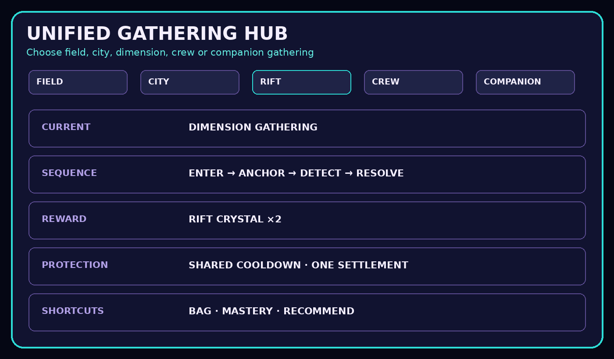
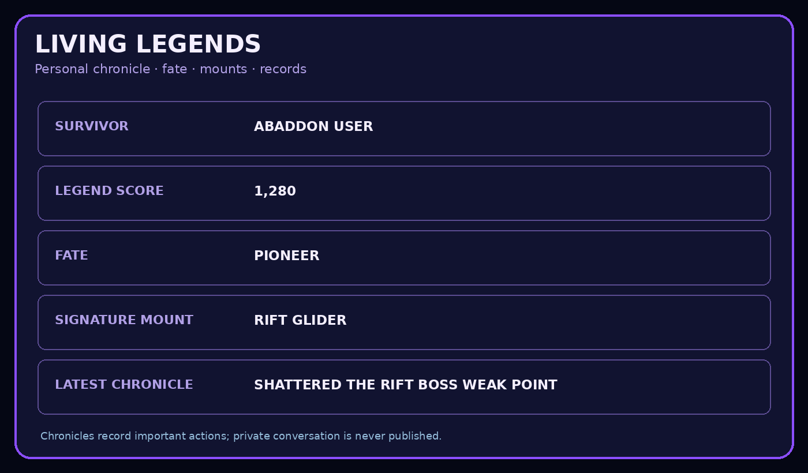

PUBLIC WORLD MAP · OPT-IN ONLY
BLACK CITY Public World Map
Only privacy-safe city summaries from guilds that explicitly enable publishing appear here.
V16.2.0 · LIVING LEGENDS
City actions now feed personal chronicles and mount progression.
Only explicitly public guild summaries are shown. Private balances, scenes and conversation records are never published.


Privacy
User IDs, balances, crime records, private hideouts and channel information are never included. When the feed is unavailable, the page says Awaiting connection instead of showing fake values.
Awaiting connection
Checking the public guild feed.